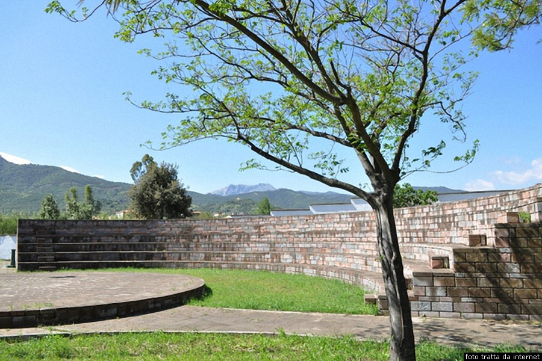

In evidenza: "Nuovo progetto per il parco del paese"
Il municipio ha approvato il piano di riqualificazione del parco: più verde, aree giochi e spazi culturali. Leggi tutto...
La voce indipendente del paese
Il municipio ha approvato il piano di riqualificazione del parco: più verde, aree giochi e spazi culturali. Leggi tutto...